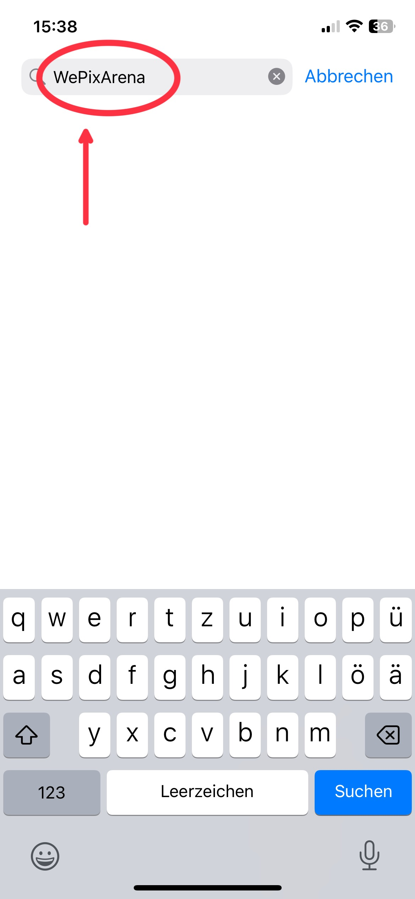
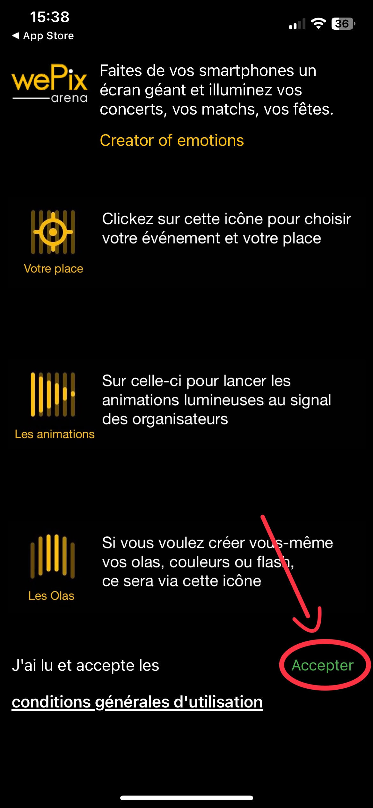
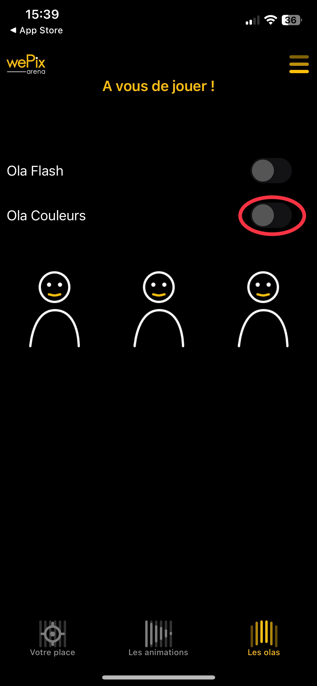
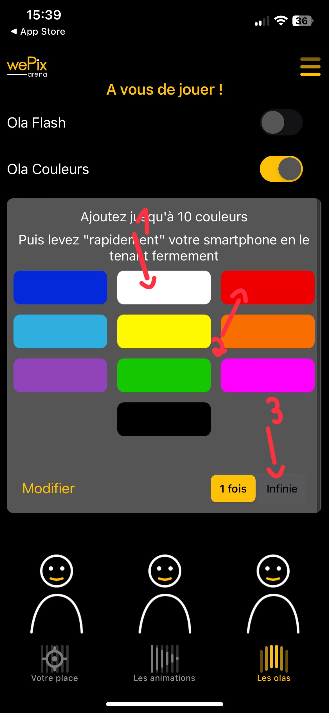
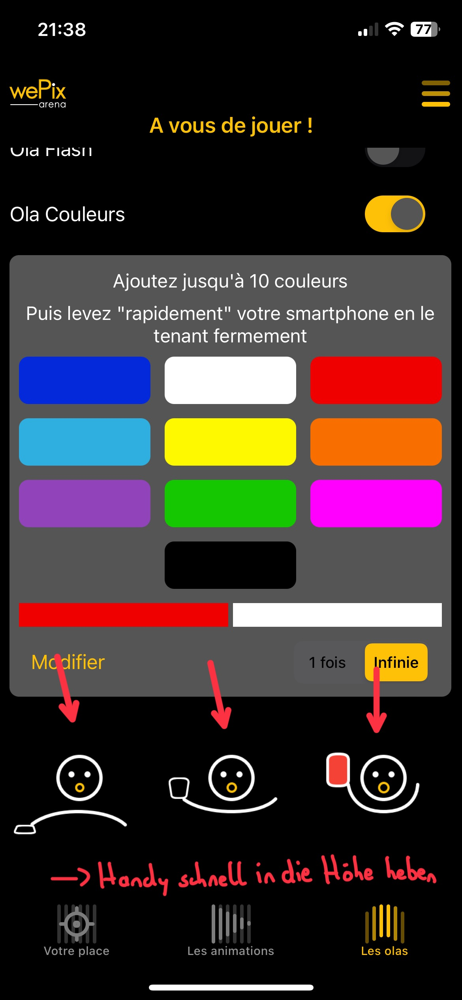

.jpg){kind=link}

Frohe Weihnachten für Euch und Eure Familien!
Mache dich auf und werde Licht.
Mache dich auf und werde Licht.
Mache dich auf und werde Licht.
Denn dein Licht kommt.
(Kanon!)
Noten siehe Gotteslob Nr. 219 (TonArt Stukenbrock, 17.12.2023)
O du fröhliche, o du selige
gnadenbringende Weihnachtszeit!
Welt ging verloren
Christ ist geboren
Freue, freue dich, o Christenheit!
O du fröhliche, o du selige
gnadenbringende Weihnachtszeit!
Christ ist erschienen
uns zu versühnen
Freue, freue dich, o Christenheit!
O du fröhliche, o du selige
gnadenbringende Weihnachtszeit!
Himmlische Heere
jauchzen dir Ehre
Freue, freue dich, o Christenheit!
Noten siehe Sizilianische Volksweise 1803 (Wikipedia, 17.12.2023)
1. Wir sagen euch an den lieben Advent.
Sehet die erste Kerze brennt!
Wir sagen euch an eine heilige Zeit,
Machet dem Herrn den Weg bereit!.
|: Freut euch ihr Christen, freuet euch sehr!
Schon ist nahe der Herr.:|
2. Wir sagen euch an den lieben Advent.
Sehet die zweite Kerze brennt!
So nehmet euch eins um das andere an,
Wie euch der Herr an uns getan.
|: Freut euch ihr Christen, freuet euch sehr!
Schon ist nahe der Herr.:|
3. Wir sagen euch an den lieben Advent.
Sehet die dritte Kerze brennt!
Nun trag eurer Güte hellen Schein
Weit in die dunkle Welt hinein.
Freut euch ihr Christen, freuet euch sehr!
Schon ist nahe der Herr.
Noten siehe „Wir sagen euch an“ (Erzbistum Köln, 17.12.2023)
Über die App „wePix arena“ könnt ihr euer Handy zum Lichtermeer machen! Anleitung:





Oder mithilfe der Taschenlampenfunktion
Alternativ per Hintergrundfarbe Rot, Grün oder Gold
Den Verweis (Link) auf diese Web Seite kannst Du einfach weitergeben per QR-Code: